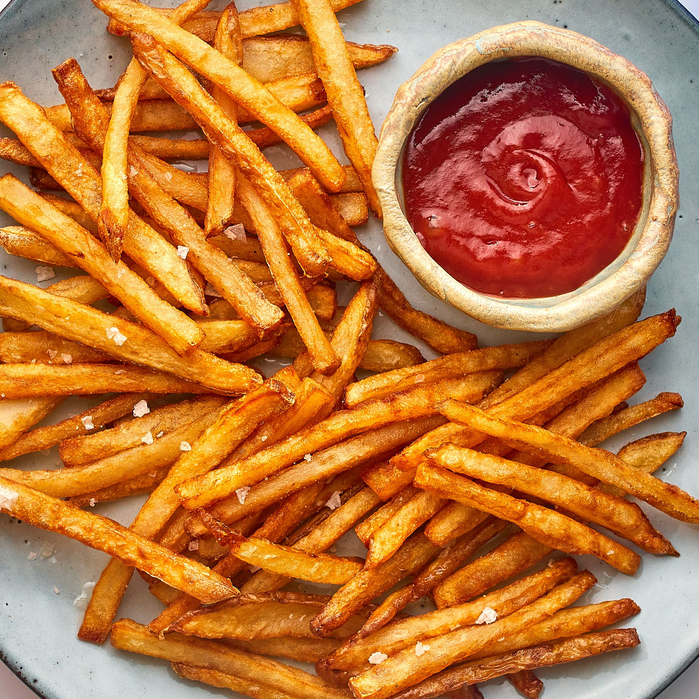

Home Fries

Description
Russet potato julienned, parboiled and fried to give a restaraunt style fry in the comfort of your home
Ingredients
- 400-600 Grams of Russet potatoes (can use red or yellow too)
- 1 TBPS Oil (olive, canola, vegetable)
- Salt or seasonings of your choice
Steps
- Wash potatoes under cold water to remove any dirt left over
- Cut in half vertically, then cut those sections in half again, cut thinner if desired
- Once potatoes are the desired thickness, boil on low-medium heat until you can sink a fork/knife into a piece easily
- carefully strain the potatoes, and toss in a oil of your choice
- Add salt and any other seasonings, cook at 400C for 25-30 min, flipping halfway
- Let cool for 5 min before serving
- These can be cooked on a tray in the oven or in a air-fryer